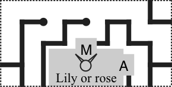

{kind=link}
{kind=link}
{kind=link}
{kind=link}

The Greeks would later write about this affair quite differently. For one thing, they would use the alphabet.
1250 BC: Twice-seven young Cretan minotaurs have been brought to Athens and tossed into the labyrinth of the vicious Theseus. However, a love-struck Athenian damsel (who is always upright, unlike many of the other 15 characters) has shown them the route out. (Everyone scribbled it down in their often-disoriented, old-fashioned, and very linear manner.)
Puzzle (PDF)Architect's note: Paths are shown in black, and a path can only end at a dot, a gray chamber, or the outer border of the 4x4 labyrinth.



| Text adjoining edge | Texts adjoining paths | Description |
|---|---|---|
| Bridge unit | Q; A | Half-square with horned head |
| Chandler tec | D; E | Half-square with horned head |
| Debated | I; R | Half-square with horned head |
| Dinero | T; U | Half-square with horned head |
| Docking | N; E | Half-square with horned head |
| Emptily | U; T | Half-square with horned head |
| Immature | E; R | Half-square with horned head |
| Lily or rose | M; A | Half-square with horned head |
| Luna | PT; E | Half-square with horned head |
| Sacred | P; O | Half-square with horned head |
| Schnorrer | O; D | Half-square with horned head |
| Scram | TW; A | Half-square with horned head |
| Shindig | A; P | Half-square with horned head |
| Slender | K; U | Half-square with horned head |
| Annulus | O; Q | Half-square with legs and feet |
| At that time | W; A | Half-square with legs and feet |
| Ave. crosser | P; E | Half-square with legs and feet |
| Clueless role | DW; A | Half-square with legs and feet |
| Dragged | Z; I | Half-square with legs and feet |
| Fight | T; U | Half-square with legs and feet |
| Ilex | I; N | Half-square with legs and feet |
| Iron in Paris | Z; I | Half-square with legs and feet |
| Keanu role | N; U | Half-square with legs and feet |
| Mr. Ripken | U; N | Half-square with legs and feet |
| She-horse | W; O | Half-square with legs and feet |
| Sly | A; S | Half-square with legs and feet |
| Sol follower | S; O | Half-square with legs and feet |
| Urn | E; K | Half-square with legs and feet |
| [none] | D; I; O; J | Square with person wearing dress |
| [none] | VIR | Square with person not wearing dress |
{kind=link}
{kind=link}
{kind=link}
{kind=link}
{kind=link}
{kind=link}
{kind=link}
{kind=link}
{kind=link}
{kind=link}
{kind=link}
{kind=link}
{kind=link}
{kind=link}
{kind=link}
{kind=link}
{kind=link}
{kind=link}
{kind=link}
{kind=link}
{kind=link}
{kind=link}